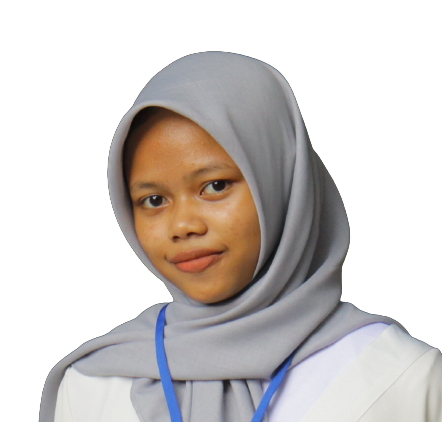

Hi, Saya INDAH ROBIATUL ADAWIYAH
Seorang mahasiswi yang sedang menempuh pendidikan di Universitas Siliwangi, khususnya Jurusan Informatika. Saat ini, saya telah mencapai semester 4 dalam perjalanan akademik saya. Sejak awal kuliah, saya telah memilih untuk fokus dalam mempelajari bahasa pemrograman Flutter, sebuah platform yang semakin diminati dalam pengembangan aplikasi mobile, serta saya juga tertarik untuk menggali lebih dalam dalam pengembangan aplikasi menggunakan teknologi native. Namun, di balik semangat saya dalam belajar dan berkembang di bidang teknologi, ada sebuah motivasi yang lebih mendalam yang menggerakkan langkah-langkah saya. Adik saya yang tercinta mengidap cerebral palsy, sebuah kondisi yang membatasi kemampuannya untuk berbicara dan menulis. Dari situ, muncul keinginan besar dalam diri saya untuk menciptakan sesuatu yang dapat memberikan manfaat bagi orang-orang seperti adik saya dan mereka yang memiliki kesulitan serupa. Dari sinilah lahir gagasan untuk mengembangkan aplikasi yang dapat membaca pikiran orang-orang yang tidak bisa berbicara dan menulis. Saya percaya bahwa teknologi memiliki kekuatan untuk membawa perubahan positif dalam kehidupan orang-orang yang membutuhkan, dan saya bertekad untuk mewujudkannya melalui pengetahuan dan keterampilan yang saya peroleh selama studi di universitas.
Riwayat Pendidikan
-
Universitas Siliwangi
Jurusan Informatika 2022-sekarang
-
SMA Negeri 2 Tasikmalaya
Jurusan IPA 2019-2022
-
SMP Negeri 1 Cihaurbeuti
2017-2019
Riwayat Pelatihan
-
IDCAMP Multi-Platform App Developer
2023
Jadwal Kuliah
| Hari | Nama Mata Kuliah | Dosen Pengampu | Jadwal | SKS | Kelas |
|---|---|---|---|---|---|
| Senin | PEMODELAN DAN SIMULASI ( KJ55201204 ) | Dr. Ir. Eka Wahyu Hidayat., S.T., M.T. | (09:31:00 - 12:00:00) FT1-2N | 3 | B |
| Selasa | KEAMANAN INFORMASI ( KJ55201210 ) ANALISA NUMERIK ( KF55201202 ) |
Ir. Alam Rahmatulloh., S.T., M.T., MCE., IPM. Siti Yuliyanti., S.T., M.Kom. |
(07:00:00 - 09:30:00) FT1-2A (10:21:00 - 12:00:00) FT1-2N |
3 2 |
B B |
| Rabu | SISTEM INFORMASI ( KJ55201206 ) JARINGAN KOMPUTER ( KJ55201202 ) PEMROGRAMAN WEB ( KJ55201212 ) |
Ir. Rianto., S.T., M.T. Rohmat Gunawan., S.T., M.T. Ir. Cecep Muhamad Sidik Ramdani., S.T., M.T. |
(07:00:00 - 09:30:00) FT1-2L (09:31:00 - 12:00:00) FT1-2B (13:00:00 - 15:30:00) FT1-2G |
3 3 3 |
B B B |
| Kamis | SOSIOTEKNOLOGI INFORMASI ( KJ55201308 ) SISTEM OPERASI ( KJ55201208 ) |
Ir. R. Reza El Akbar., S.Si., M.T., M.Kom. Ir. Andi Nur Rachman., S.T., M.T. |
(14:41:00 - 16:20:00) FT1-2N (15:31:00 - 18:00:00) FT1-1E |
2 3 |
B E |
| Jumat | ETIKA PROFESI ( KF55201302 ) | Dr. Ir. Nur Widiyasono., M.Kom. | (08:41:00 - 09:30:00) FT1-1E | 1 | E |
Aktivitas
-
NOSTRACODE
Aktif sebagai anggota 2022-sekarang
Aktif sebagai mentor 2023-sekarang
Organisasi di luar kampus yang berfokus pada pemahaman skill coding
Menggunakan bahasa pemrograman Dart dengan Software Development Kit Flutter
Prestasi yang pernah diraih
-
Mei 2020
Peserta Olimpiade Fisika pada "Kompetisi Hardiknas POSI" yang diselenggarakan Pelatihan Olimpiade Sains Indonesia di Tingkat Nasional
-
Maret 2018
Juara 1 Olimpiade IPA pada "Olimpiade Sains Nasional Tingkat SMP" yang diselenggarakan Kemdikbud di Tingkat Kabupaten dengan nilai tertinggi se-Jawa Barat